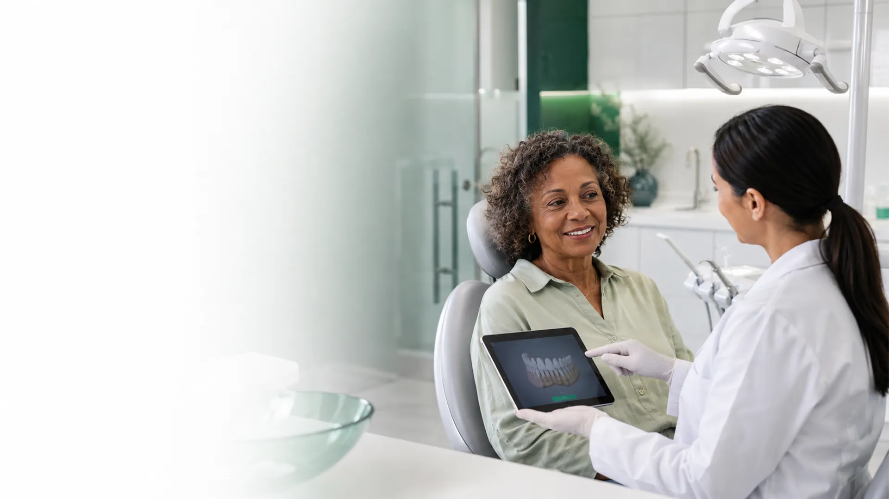
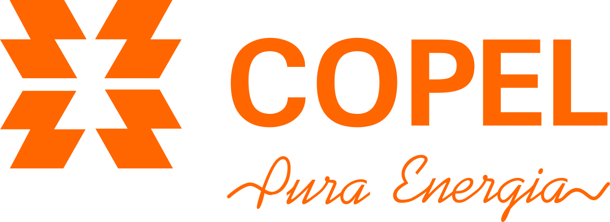
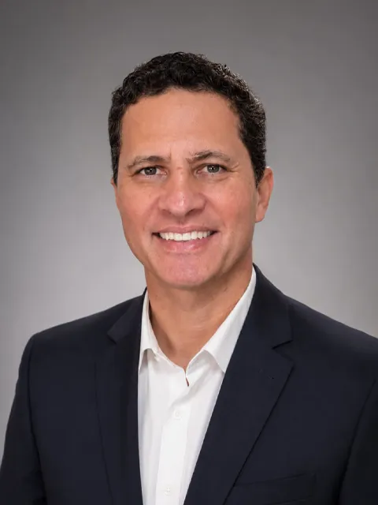
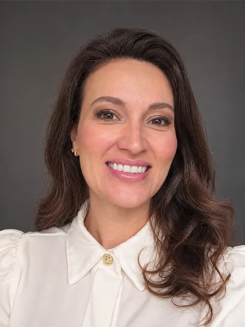

ótimo atendimento, excelente trabalho os doutores muito queridos, profissionais eficientes.
Nicolly Senke Ribeiro · Google★★★★★
Atendimento da Dra. Camila foi excelente. Fiz profilaxia e ainda vou fazer clareamento! As expectativas foram superadas!
Angela Gomes da Rocha · Google★★★★★
Excelente. Equipe profissional, atenciosos e educados. Fiquei muito satisfeita com o trabalho do dr. Luciano. Muito obrigada.
Janete Garcia · Google★★★★★
Excelente atendimento por todos, muito satisfeita com o resultado do tratamento. Obrigada Dr. Luciano Zanetti, profissional seguro do que faz, que transmite tranquilidade e confiança ao paciente. Clínica bem localizada e tranquilidade para estacionar. Obrigada!
Cleonice Paes de Freiria · Google★★★★★
Me desloco de Florianópolis para tratamento nesta clínica devido sua excelência.
Telmo Koerich · Google★★★★★
Excelente atendimento, muito atenciosos, muito satisfeito com os resultados do meu tratamento.
Assir Soares · Google

Cuidado completo
Sua saúde bucal merece atenção em cada detalhe
Cada sorriso tem uma história, uma necessidade e um objetivo. No ISBI Odonto, o atendimento começa com uma avaliação individualizada para entender sua saúde bucal, suas expectativas e o melhor caminho para o seu tratamento.
01
Precisa fazer uma avaliação odontológica?
02
Quer recuperar a estética do sorriso?
03
Tem dificuldade para mastigar?
04
Usa prótese e deseja mais conforto?
05
Procura atendimento com planejamento completo?
06
Busca uma clínica odontológica em Curitiba com estrutura integrada?
O ISBI Odonto une experiência, estrutura e cuidado em Curitiba
Somos uma clínica odontológica com foco em reabilitação oral, próteses, implantes dentários e tratamentos voltados à recuperação da função mastigatória, saúde bucal e estética do sorriso.
Localizada no bairro Santa Quitéria, com fácil acesso para pacientes de diferentes regiões de Curitiba, a clínica atua há 23 anos com experiência clínica e planejamento personalizado.
23 anosDe atuação da clínica
28 anosDo Dr. Luciano em implantes
NeodentImplantes e componentes
Nossa estrutura
Estrutura completa para cuidar do seu sorriso com mais segurança
Entre os diferenciais da nossa estrutura estão o laboratório de prótese próprio, o centro cirúrgico e a integração entre diagnóstico, etapas clínicas, procedimentos cirúrgicos e reabilitação protética no mesmo local.
Laboratório anexo ao consultório
O laboratório anexo ao consultório aproxima as etapas clínicas e laboratoriais, contribuindo para mais precisão, agilidade e personalização em diferentes fases do tratamento.
Centro cirúrgico próprio
O centro cirúrgico da clínica permite realizar etapas cirúrgicas com mais previsibilidade, suporte e segurança para casos que exigem maior estrutura.
Avaliação com o próprio profissional
A avaliação é feita pelo profissional responsável pelo planejamento e condução do tratamento, trazendo mais clareza no diagnóstico e na tomada de decisão.
Atendimento humanizado
Um atendimento próximo, claro e cuidadoso para que o paciente entenda cada etapa do tratamento e se sinta acolhido durante sua jornada.

Clínica credenciada para implantes pela Copel
Além da estrutura clínica e cirúrgica, o ISBI Odonto é credenciado pela Copel para tratamentos com implantes dentários.
Componentes e implantes Neodent
O ISBI Odonto trabalha exclusivamente com componentes e implantes da Neodent, priorizando padronização, previsibilidade e segurança no planejamento reabilitador.
Cada paciente precisa de um plano de cuidado próprio
Antes de indicar qualquer tratamento, é essencial avaliar a saúde bucal, a função mastigatória, as necessidades estéticas e os objetivos de cada paciente. No ISBI Odonto, o planejamento é feito de forma individualizada, com orientação clara sobre as possibilidades de tratamento.
Tratamentos que podem fazer parte do seu planejamento odontológico
O ISBI Odonto reúne diferentes áreas da odontologia para oferecer um cuidado mais completo, sempre a partir de uma avaliação individualizada.
Implantes dentários
Indicados para substituir um ou mais dentes perdidos, conforme avaliação clínica e planejamento profissional.
Próteses dentárias
Soluções para recuperar função mastigatória, estética e conforto em diferentes necessidades de reabilitação oral.
Prótese sobre implante
Alternativa para reabilitação com mais estabilidade em relação a próteses removíveis, quando indicada para o caso.
Prótese protocolo
Solução fixa sobre implantes para casos selecionados, de acordo com avaliação profissional.
Reabilitação oral
Planejamento integrado para recuperar função, estética e equilíbrio do sorriso em casos mais completos.
Odontologia estética e restauradora
Tratamentos voltados à harmonia do sorriso, restauração de dentes e melhora estética, sempre com indicação individual.
Clareamento dental
Procedimento estético indicado para melhorar a tonalidade dos dentes, quando adequado para o paciente.
Prevenção e manutenção
Cuidados periódicos para acompanhar a saúde bucal, prevenir problemas e manter os resultados dos tratamentos.
Indicação individualA indicação de qualquer tratamento depende da avaliação profissional, exames necessários e planejamento personalizado para cada paciente.
Conheça os profissionais que atuam no ISBI Odonto com foco em reabilitação oral, implantes dentários, próteses, odontologia estética, planejamento individualizado e atendimento acolhedor.

Dr. Luciano Zanetti
Cirurgião-dentista - CRO 11612/PR
Responsável técnico do ISBI - Instituto Sul Brasileiro de Implantodontia
O Dr. Luciano Zanetti é cirurgião-dentista graduado pela Universidade Estadual de Ponta Grossa, em 1997, e especialista em Implantodontia pela Universidade Federal do Paraná.
Com 28 anos de experiência em implantes dentários, atua no planejamento e execução de tratamentos voltados à reabilitação oral, devolvendo função, segurança e qualidade de vida aos pacientes por meio de soluções com implantes e próteses.
Sua trajetória profissional está diretamente ligada à história do ISBI, onde também exerce a função de responsável técnico da clínica.

Dra. Stéphanie Padilha Geraldini
Cirurgiã-dentista - CRO-PR 21043
A Dra. Stéphanie Padilha Geraldini é cirurgiã-dentista formada pela Universidade Tuiuti do Paraná, em 2010.
É especialista em Prótese Dentária e atua também nas áreas de odontologia restauradora e estética, com formação complementar em próteses sobre implante. Com 16 anos de experiência em reabilitação oral e estética dental, realiza tratamentos voltados à recuperação do sorriso, função mastigatória e harmonia estética, sempre com planejamento individualizado para cada paciente.
Atendimento
Como funciona o atendimento no ISBI Odonto?
O cuidado começa com uma escuta atenta e uma avaliação profissional. A partir disso, cada caso é planejado de forma individual, considerando saúde bucal, função, estética, exames necessários e objetivos do paciente.
1
Avaliação inicial
Entendimento das necessidades, histórico, queixas principais e condição bucal do paciente.
2
Diagnóstico e planejamento
Análise clínica, exames quando necessários e definição da melhor conduta para cada caso.
3
Tratamento indicado
Execução das etapas planejadas com acompanhamento profissional e orientação ao paciente.
4
Acompanhamento e manutenção
Orientações para preservar a saúde bucal, acompanhar resultados e manter o cuidado ao longo do tempo.
Cuide da sua saúde bucal com planejamento e acolhimento
O ISBI Odonto atua com reabilitação oral, implantes dentários, próteses dentárias, próteses sobre implante, odontologia restauradora, estética dental, clareamento e cuidados preventivos. A indicação de cada tratamento depende de avaliação profissional.
A clínica atende somente implantes?
Não. Embora o ISBI tenha forte atuação em implantodontia e reabilitação oral, a clínica reúne diferentes especialidades odontológicas para oferecer um cuidado mais completo em um único local.
Preciso passar por avaliação antes do orçamento?
Sim. O orçamento depende da análise individual, condição bucal, exames necessários, tipo de tratamento indicado e planejamento profissional. A avaliação ajuda a definir a melhor conduta para cada caso.
A clínica possui laboratório de prótese?
Sim. A clínica conta com laboratório anexo ao consultório, o que contribui para maior integração entre dentista e laboratório em diferentes etapas do tratamento.
O ISBI Odonto tem centro cirúrgico próprio?
Sim. A clínica possui centro cirúrgico próprio, permitindo realizar procedimentos indicados com mais estrutura, previsibilidade e suporte.
Onde fica o ISBI Odonto?
O ISBI Odonto fica na R. Prof. Ulisses Vieira, 1315, no bairro Santa Quitéria, em Curitiba - PR.
Como faço para agendar uma avaliação?
Você pode entrar em contato pelo telefone ou WhatsApp da clínica: (41) 98422-7987. A equipe irá orientar sobre horários e informações necessárias para o atendimento.
A indicação de tratamento é igual para todos os pacientes?
Não. Cada paciente precisa de uma avaliação individualizada. O planejamento considera saúde bucal, histórico, exames, função mastigatória, estética e objetivos do paciente.
Localização
Clínica odontológica no bairro Santa Quitéria, em Curitiba
O ISBI Odonto está localizado no bairro Santa Quitéria, com fácil acesso para pacientes de regiões próximas como Água Verde, Vila Isabel, Fazendinha, Ecoville, Arthur Bernardes e Mário Tourinho.